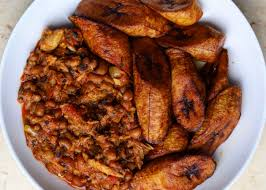

Home
Plantain and Bean Stew – Red Red

Description
Red red! A Ghanaian comfort dish like no other. It is very simple to make, very tasty, and filling. This is a simplified version with no protein or too many additional ingredients that is sometimes added to red red (like dried shrimp or fish). No blender needed or any special in gradients except of course the key ingredient palm oil. Before criticizing West African use of this ingredients I suggest you read article by Yewande Komolafe for a more wholistic vies of the situation. Check this recipe out if you want to try your hand at a Ghanaian dish.
Estimated Cooking Time: 10 hrs 45 mins
Servings: 7
Total calories (per serving): 315 kcal
Ingredients
- 1 1/2 – 2 cups of dried black eyed peas
- 1/3 cup -1/2 cup red palm oil
- 1 very large or 2 medium tomatoes (diced)
- 1 medium onion or 1/2 large onion (sliced)
- 2 Scotch bonnet whole
- 1 shrimp boullion
- 1 teaspoon paprika
- 1 teaspoon cayenne
- 1/2 teaspoon garlic powder
- 1/2 teaspoon onion powder
- salt to taste
- Fried Plantain
- 3–4 ripe plantains
- 2 to 3 cups oil (canola or vegetable oil, for frying)
- Salt (optional)
- Gari (cassava Flour (optional))
Steps
Bean Stew
- Soak your beans (black eyes peas) overnight in water, make sure they are fully submerge, they will expand overnight.
- The next day, remove your beans from the water they soaked in and boil for 40 minutes or until tender. Set aside.
- In a medium pot, heat the palm oil over medium heat. When hot, add onions and sauté the onions for about 3 minutes.
- Add your diced tomatoes, and whole scotch bonnet.
- Saute for another about 5 more minutes.
- Add your seasoning, paprika, onion powder, garlic powder, cayenne, shrimp bouillon and salt to taste.
- Simmer stirring constantly for about 5 minutes.
- Add cooked, drained black eyed peas and mix to they are fully coated in tomato mixture. Simmer on low for 15 minutes stirring periodically or until the stew thickens.
- Taste and adjust salt if needed.
- Serve with fried plantains or simple white rice.
Fried Plantain
- Peel plantains and cut into 1/4-inch-thick slices. Diagonally cut is preferred.
- Add oil to a heavy bottom pan and you can deep dry or shallow fry plantains.
- Fry for 1 1/2 minutes on one side, flip and cook for 1 minute on the other side. You are looking for a deep golden brown colour but watch so it does not burnt. May have to lower heat to medium and fry for a total of 3-4 minutes. Test out a single plantain first before adding all your cut plantain into the hot oil.
- Place on paper towel to remove excess oil and serve with your beans.